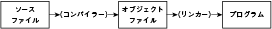

# 分割コンパイル
これまで、プログラムは1つのソースファイルから作っていた。プログラムは複数のソースファイルから作ることもできる。ソースファイルを複数に分割することで、ソースファイルの管理がしやすくなったり、プログラムのビルド時間の短縮にもつながる。
# ソースファイルとコンパイル
ソースファイルを分割すると、C++の書き方にも注意が必要になる。だがその前に、複数のソースファイルをコンパイルして1つのプログラムにする方法を学ぶ。
# 単一のソースファイルのコンパイル
C++のソースファイルをコンパイルして実行可能ファイルを作る方法をいま一度おさらいをしよう。
source.cppという名前のソースファイルがあるとき、ここからprogramという名前の実行可能ファイルを作るには、
$ g++ -o program source.cpp
としていた。毎回このコマンドを入力するのは面倒なので、Makefileを以下のように書いていた。
program: source.cpp
g++ $< -o [email protected]
# ヘッダーファイルはコピペ
すでに、ソースファイルのほかにヘッダーファイルというファイルも使っている。ヘッダーファイルはソースファイルではない。コンパイル前にソースファイルにコピペされるだけのものだ。
例えば以下のような内容のheader.hというヘッダーファイルがあるとして、
// header.h
++i ;
source.cppが以下のようであるとき、
int main()
{
int i = 0 ;
#include "header.h"
#include "header.h"
#include "header.h"
int result = i ;
}
source.cppをコンパイルすると、まずヘッダーファイルが以下のように展開される。
int main()
{
int i = 0 ;
// header.h
++i ;
// header.h
++i ;
// header.h
++i ;
int result = i ;
}
ヘッダーファイルとはこれだけのものだ。コンパイラーが#includeされた場所に、ヘッダーファイルの中身を愚直にコピペするだけだ。
# 複数のソースファイルのコンパイル
2つのソースファイル、foo.cppとbar.cppからなるプログラムをコンパイルするには、
$ g++ -o program foo.cpp bar.cpp
とする。
# オブジェクトファイル
単にソースファイルを分割したいだけならば、GCCに分割したソースファイルをすべて指定すればよい。しかしその場合、複数あるソースファイルの1つだけを編集した場合でも、すべてのソースファイルをコンパイルしなければならない。
C++では伝統的に、ソースファイルを部分的にコンパイルしてオブジェクトファイルを生成し、オブジェクトファイルをリンクしてプログラムを生成する方法がある。
ソースファイルをオブジェクトファイルにコンパイルするのはコンパイラー、オブジェクトファイルをプログラムにリンクするのはリンカーの仕事だ。
TODO: 図示
ソースファイル→(コンパイラー)→オブジェクトファイル→(リンカー)→プログラム

GCCではC++コンパイラーの名前はg++で、リンカーの名前はldだ。ただし、C++のオブジェクトファイルをリンクするのにリンカーを直接使うことはない。g++はldを適切に呼び出してくれるからだ。
ソースファイルsource.cppをコンパイルしてオブジェクトファイルを生成するには、-cオプションを使う。
$ g++ -c source.cpp
生成されるオブジェクトファイルの名前はソースファイルの名前の拡張子を.oに置き換えたものになる。上のコマンドを実行した結果、オブジェクトファイルsource.oが生成される。
生成したオブジェクトファイルは、g++の入力として使うことで、リンクしてプログラムにすることができる。g++は裏でリンカーldを適切に呼び出してくれる。
$ g++ -o program source.o
オブジェクトファイル名を別の名前にしたい場合は、-o object-file-nameオプションを使う。
$ g++ -o object.o -c source.cpp
複数のソースファイル、foo.cppとbar.cppからオブジェクトファイルを生成し、リンクして実行可能ファイルprogramを生成するには以下のようにする。
$ ls
bar.cpp foo.cpp
$ g++ -c foo.cpp
$ g++ -c bar.cpp
$ ls
bar.cpp bar.o foo.cpp foo.o
$ g++ -o program foo.o bar.o
$ ls
bar.cpp bar.o foo.cpp foo.o program
こうすることによって、1つのソースファイルを編集しただけで、すべてのソースファイルをコンパイルする必要がなくなる。
これをMakefileで書くには、出力するファイルと依存するファイルを考える。
programはfoo.oとbar.oに依存するfoo.oはfoo.cppに依存するbar.oはbar.cppに依存する
これを素直に書き出していけばよい。
# programはfoo.oとbar.oに依存する
program : foo.o bar.o
g++ -o [email protected] $^
# foo.oはfoo.cppに依存する
foo.o : foo.cpp
g++ -c $<
# bar.oはbar.cppに依存する
bar.o : bar.cpp
g++ -c $<
$^はそのルールの依存するファイル名をすべて空白区切りで得る自動変数だ。この場合、foo.o bar.oに置換される。
# 複数のソースファイルの書き方
C++の1つのソースファイルは、1つの翻訳単位(translation unit)として扱われる。別の翻訳単位の定義を使うには、さまざまな制約がある。具体的な例で学ぼう。
# 関数
以下のコードを見てみよう。
#include <iostream>
void print_int( int x )
{
std::cout << x ;
}
int main()
{
print_int( 123 ) ;
}
このコードには2つの定義がある。print_intとmainだ。
関数print_intを別のソースファイルであるprint_int.cppに分割してみよう。
// print_int.cpp
#include <iostream>
void print_int( int x )
{
std::cout << x ;
}
このコードは問題なくコンパイルできる。
$ g++ -c print_int.cpp
すると残りのソースファイルをmain.cppとすると以下のようになる。
// main.cpp
int main()
{
print_int( 123 ) ;
}
このコードはコンパイルできない。なぜならば、C++では名前は使う前に宣言しなければならないからだ。
関数を宣言するには、関数の本体以外の部分を書き、セミコロンで終端する。
// main.cpp
void print_int( int ) ;
int main()
{
print_int( 123 ) ;
}
これでコンパイル、リンクができるようになった。
$ g++ -c main.cpp
$ g++ -o program main.o print_int.o
このとき、main.cppで関数print_intを定義することはできない。
// エラー、print_int.cppでも定義されている
void print_int( int ) { }
int main()
{
print_int( 123 ) ;
}
C++では定義は全翻訳単位に1つしか書くことができないルール、ODR(One Definition Rule、単一定義原則)があるからだ。
// 宣言
void f() ;
// OK、再宣言
void f() ;
// 定義
void f() { }
// エラー、再定義
// ODR違反
void f() { }
なぜODRがあるのか。なぜ定義は1つしか書けないのか。理由は簡単だ。もし定義が複数書けるならば、異なる定義を書くことができてしまうからだ。
bool f() { return true ; }
bool f() { return false ; }
もし定義を複数書くことができる場合、この関数fはtrueを返すべきだろうか。それともfalseを返すべきだろうか。
この問題を防ぐために、C++にはODRがある。
複数のソースファイル、つまり複数の翻訳単位からなるプログラムの場合でもODRは適用される。定義はすべての翻訳単位内で1つでなければならない。
引数リストが違う関数は別の関数で、別の定義になる。
// 定義
void f() { }
// OK、別の定義
void f( int ) { }
// OK、別の定義
void f( double ) { }
名前は使う前に宣言が必要だが、肝心の定義は別のソースファイルに書いてある。宣言と定義を間違えてしまった場合はエラーになる。
// print_int.cpp
// 失敗状態を返す
bool print_int( int x )
{
std::cout << x ;
return std::cout.fail() ;
}
// main.cpp
void print_int( int ) ;
int main()
{
// エラー
print_int( 123 ) ;
}
このような間違いを防ぐためのお作法として、宣言はヘッダーファイルに書いて#includeする。
// print_int.h
bool print_int( int x ) ;
// main.cpp
#include "print_int.h"
int main()
{
// 間違えない
bool result = print_int( 123 ) ;
}
# 変数
変数にも宣言と定義がある。通常、変数の宣言は定義を兼ねる。
// 宣言かつ定義
int variable ;
そのため、別の翻訳単位の変数を使うために変数を書くと、定義が重複してしまい、ODR違反になる。
// global.cpp
int variable ;
// main.cpp
// エラー、ODR違反
int variable ;
int main()
{
variable = 0 ;
}
変数を定義せずに宣言だけしたい場合は、externキーワードを使う。
// global.cpp
int variable ;
// main.cpp
// OK
// 別の翻訳単位の定義を参照する
extern int variable ;
int main()
{
variable = 123 ;
}
externキーワードを名前空間スコープで宣言された変数に使うと、定義せずに別の翻訳単位の定義を参照する意味になる。
変数の場合も、間違いを防ぐためにヘッダーファイルに書いて#includeするとよい。
// global.h
extern int variable ;
// main.cpp
#include "global.h"
int main()
{
variable = 123 ;
}
# インライン関数/インライン変数
変数や関数の定義はODRにより重複できない。ということはヘッダーファイルに書いて複数の翻訳単位で#includeできないということだ。
// library.h
std::string delimiter{"\n"} ;
void print_int( int x )
{ std::cout << x << delimiter ; }
// foo.cpp
// エラー、ODR違反
#include "library.h"
// bar.cpp
// エラー、ODR違反
#include "library.h"
library.hには宣言だけを書いて、別途翻訳単位となるソースファイル、例えばlibrary.cppを用意しなければならない。
// library.h
void print_int( int x ) ;
// library.cpp
std::string delimiter{"\n"} ;
void print_int( int x )
{ std::cout << x << delimiter ; }
小さなライブラリの場合、この制約は煩わしい。できればヘッダーファイルだけで済ませてしまいたい。このためにC++には特別なODRを例外的に回避する方法がある。
キーワードinlineを付けて定義した関数と変数は、インライン関数、インライン変数となる。
// library.h
// インライン変数
inline std::string delimiter{"\n"} ;
// インライン関数
inline void print_int( int x )
{ std::cout << x << delimiter ; }
インライン関数とインライン変数は、複数の翻訳単位で重複して定義できる。
// foo.cpp
#include "library.h"
// bar.cpp
#include "library.h"
inlineはODRを例外的に回避できるとはいえ、強い制約がある。
- 異なる翻訳単位に限る
同じ翻訳単位の中で重複することはできない。
// 1つの翻訳単位
inline int variable ;
// エラー、再定義
inline int variable ;
- 同じトークン列である
インライン関数、インライン変数の定義のトークン列、つまりソースコードの文字列は完全に同じでなければならない。
たとえば以下はトークン列が違う。
inline int f( int x ) { return x ; }
inline int f( int y ) { return y ; }
インライン関数と変数のトークン列を同じにするには、ヘッダーファイルに書いて#includeで取り込むことを徹底する。
- 意味が同じである
同じトークン列でも意味が異なることがある。
// foo.cpp
void f( int ) { }
inline bool g( )
{
return f( 0 ) ;
}
// bar.cpp
void f( double ) { }
inline bool g()
{
return f( 0 ) ;
}
foo.cppのインライン関数gはf(int)を呼び出すが、bar.cppのインライン関数gはf(double)を呼び出す。インライン関数gのトークン列はどちらも同じだが、意味が異なる。
ODRの例外的な回避の怖いところは、間違えてしまってもコンパイラーがエラーメッセージを出してくれる保証がないところだ。上の同じトークン列で違う意味のような関数は、そのままコンパイルが通ってリンクされ、実行可能なプログラムが生成されてしまうかもしれない。そのようなプログラムの挙動がどうなるかはわからない。この理由は、ODR違反を完全に発見するコンパイラーの実装が技術的に困難だからだ。ODR違反をしないのはユーザーの責任だ。
インライン変数とインライン関数はわざわざ翻訳単位を分けて分割コンパイルするまでもないライブラリに使うとよい。
# クラス
クラスにも宣言と定義がある。
// 宣言
struct Foo ;
// 定義
struct Foo
{
int data_member ;
int member_function() ;
} ;
クラスを複数の翻訳単位で使うには、関数と同じように宣言と定義に分ければよいと考えるかもしれないが、残念ながらクラスの宣言だけでできることは少ない。
クラスの宣言だけでできることは、クラス名を型名として使うとか、クラスのポインター型を作るぐらいのものだ。
struct Foo ;
using Bar = Foo ;
Foo * ptr = nullptr ;
宣言だけされたクラスのオブジェクトを作ることはできないし、ポインターの演算もできない。
struct Foo ;
int main()
{
// エラー
Foo foo ;
Foo * ptr = nullptr ;
// エラー
++ptr ;
}
この理由は、宣言だけされたクラスは不完全型(Incomplete type)という特別な扱いの型になるからだ。クラスのオブジェクトを作ったりポインター演算をするには、クラスのオブジェクトのサイズを決定する必要があるが、そのための情報はまだコンパイラーが得ていないために起こる制約だ。
クラスの定義では、インライン変数やインライン関数と同じく、ODRの例外的な回避が認められている。条件も同じで、1. 異なる翻訳単位で、2. 同じトークン列で、3. 意味も同じ場合だ。
ODR違反を起こさないために、クラス定義はインクルードファイルに書いて#includeするのがお作法だ。
// Foo.h
// クラス定義
struct Foo
{
int data_member ;
// メンバー関数の宣言
int member_function() const noexcept;
} ;
// Foo.cpp
#include "Foo.h"
// メンバー関数の定義
int Foo::member_function() const noexcept
{
return data_member ;
}
// main.cpp
#include "Foo.h"
int main()
{
Foo foo ;
foo.data_member = 42 ;
int value = foo.member_function() ;
}
クラス定義の中で定義されたメンバー関数は、自動的にインライン関数になる。
// Foo.h
struct Foo
{
int data_member ;
// インライン関数
int member_function() const noexcept
{
return data_member ;
}
} ;
このように書くと、ヘッダーファイルFoo.hを#includeするだけでどこでもクラスFooが使えるようになる。メンバー関数を定義するためのFoo.cppは必要がなくなる。
クラスのデータメンバーは具体的なオブジェクトではないので、インライン変数ではない。
struct S
{
// これはオブジェクトではない
int data_member ;
} ;
void main()
{
// オブジェクト
S s ;
// サブオブジェクト
s.data_member ;
}
# staticメンバー
クラスのメンバーは非staticメンバーとstaticメンバーに分けることができる。staticメンバーはstaticキーワードを付けて宣言する。
struct S
{
// 非staticメンバー
int data_member ;
void member_function() ;
// staticメンバー
inline static int static_data_member ;
static void static_member_function() ;
} ;
staticメンバー関数はクラスのオブジェクトには依存していない。そのため、クラスのオブジェクトなしで呼び出すことができる。
struct S
{
// 非staticメンバー
void member_function() { }
// staticメンバー
static void static_member_function() { }
} ;
int main()
{
S s ;
// オブジェクトが必要
s.member_function() ;
// オブジェクトは不要
S::static_member_function() ;
// このように呼び出すこともできる
s.static_member_function() ;
}
staticメンバー関数の呼び出しにクラスのオブジェクトを必要としない。そのため、thisも使うことはできない。
struct S
{
int data_member() ;
void f()
{// thisが使える
this->data_member ;
}
static void g()
{// thisは使えない
}
} ;
staticデータメンバーはクラスのオブジェクトの外の独立したオブジェクトだ。staticデータメンバーのクラス定義内での宣言は定義ではないので、クラスの定義外で定義する必要がある。
struct S
{
// 宣言
static int static_data_member ;
} ;
// 定義
int S::static_data_member ;
int main()
{
S::static_data_member = 123 ;
}
複数の翻訳単位からなるプログラムの場合、ODRにより定義は1つしか書けないので、どこか1つのソースファイルだけに定義を書くことになる。
// S.h
struct S
{
// 宣言
static int static_data_member ;
} ;
// S.cpp
#include "S.h"
// 定義
int S::static_data_member ;
これは面倒なので、通常はstatic変数はインライン変数にする。
// S.h
struct S
{
// インライン変数かつstatic変数
inline static int static_data_member ;
} ;
これでstatic変数を定義するだけのソースファイルを用意する必要はない。ただしインライン変数はC++17以降の機能なので、読者が昔のC++で書かれたコードを読む際には、まだ昔ながらのstaticデータメンバーの定義に出くわすだろうから、覚えておこう。
staticメンバーはクラススコープの下に関数と変数というだけで、その実態は名前空間スコープ内の関数と変数と同じだ。
// 名前空間
namespace A {
int variable ;
void function() { }
}
// クラス
struct B {
inline static int variable ;
static void function() { }
} ;
int main()
{
// 名前空間
A::variable = 1 ;
A::function() ;
// クラス
B::variable = 1 ;
B::function() ;
}
# テンプレート
テンプレートにもODRの例外が認められている。
テンプレートは具体的なテンプレート引数が与えられて実体化する。
template < typename T >
struct holder
{
T value ;
} ;
holder<int> a ;
holder<double> b ;
このため、翻訳単位ごとに、同じトークン列で同じ意味のテンプレートコードが必要だ。インクルードファイルに書いて#includeするお作法も同じだ。
// holder.h
template < typename T >
struct holder
{
T value ;
} ;
holder<int> a ;
holder<double> b ;
C++に将来的に追加される予定のモジュールが入るまでは、テンプレートコードはすべてをインクルードファイルに書いて#includeして使う慣習が続くだろう。